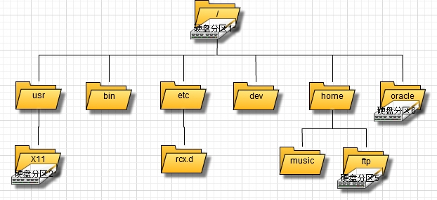

文件存储
扇区(sector)：硬盘的 最小存储单位 ，每个扇区存储512字节（相当于0.5kb）
块(block)：操作系统读取硬盘时，不会一个个扇区的读取，那样效率太低，而是一次性读取多个扇区，这种多个扇区组成的就是 块 ,是文件存取的 最小单位
块的大小，常见为4KB（我们常看到很多文件提到4K对其），即连续8个扇区组成一个块。
索引节点(inode)：存储文件的元信息，如文件创建者、修改日期、文件大小等，总之除了文件名以外的所有文件信息都存储在inode之中。
inode
inode 也会消耗硬盘空间，所以硬盘格式化时，操作系统会将硬盘分为两个区域。一个是数据区，存放文件数据；另一个是inode区(inode table)，存放inode所包含的信息。
每个inode节点的大小一般是128字节或者256字节。
inode节点的总数，在格式化时就给定了，一般是每1KB或者2KB就设置一个inode。假定在一个1GB的硬盘中，每个inode节点大小为128字节，每1KB就设置一个inode，那么inode table的大小就会打到128MB，占整块硬盘的12.8%。
inode号码
每个inode都有一个号码，操作系统用inode号码来识别不同的文件
类Unix系统内部不使用文件名，而使用inode号码来识别文件。对于系统来说，文件名只是inode号码的别称或者绰号。
用户通过文件名打开文件，其实，系统内部是三个步骤完成这个操作的：
- 系统找到文件名对于的inode号码。
- 通过inode号码，获取inode信息。
- 根据inode信息，找到文件数据所在的block，读取数据。
# 使用 ls -i 可以看到文件名对应的inode号码 $ ls -i temp.log
目录文件
类Unix系统中，目录(directory)也是一种文件。打开目录，其实就是打开目录文件。
目录文件的结构非常简单，就是一系列目录项(dirent)的列表。每个目录项，有两部分组成：包含所有文件的文件名，已经该文件对应的inode号码。
# ls命令只列出目录文件中的所有文件名 $ ls /etc # ls -i 命令列出整个目录文件，即文件名和inode号码 $ ls -i /etc # 查看文件的详细信息，就必须根据inode后面，访问inode节点，读取信息。 $ ls -l /etc
硬链接
一般情况下，文件名和inode是一一对应关系。但是类Unix系统允许多个文件名指向同一个inode号码。
这样就可以使用不同文件名访问同样的内容；对文件内容的修改会影响到所有文件名；但删除一个文件名，不会影响其他文件名的访问，这种情况就被称为硬链接(hard link)。
软连接
文件A和文件B的inode号码虽然不一样，但是文件A的内容是文件B的路径。读取文件A时，系统会自动将访问导向文件B。因此无论打开哪个文件，最终读取的都是文件B。这是文件A就被称为文件B的软连接(soft link)或者符号链接(symbolic link)
这样文件A就依赖于文件B而存在，如果删除文件B，打开文件A就会报错：”No such file or directory“。 软链接与硬链接的最大不同：文件A指向文件B的文件名，而不是文件B的inode号码，文件B的inode链接数不会发生变化。
# 创建硬链接 $ ln 源文件 目标文件 # 创建软连接 $ ln -s 源文件或目录 目标文件或目录
注意
由于inode区的存在，实际使用过程中会出现这种情况，硬盘空间还有很多，但是系统会提示空间不足，可能是由于小文件过多，导致inode被占满
Linux系统分区
盘符是一个软件级概念，分区是一个硬件级概念。
分区从实质上讲是对硬盘的一种格式化。
以windows为例，当系统启动时，会检测电脑已经连接的所有硬盘上它所能识别的分区（NTFS、FAT32等），并自动为其分配盘符，而这个分配盘符的过程，就是挂载(mount)的过程，只不过windows是自动挂载所有分区的。
具体就是，windows把第一个分区关联到C:这个盘符，第二个分区关联到d:这个盘符。。。。这样软件中的磁盘管理就和实际的硬盘分区联系了起来。

Linux磁盘管理命令
df
df：命令用来查看Linux服务器的文件系统的磁盘占用情况。
命令参数
-
-h：方便阅读的方式展示 -
-a：全部文件系统列表 -
-k：以k字节为单位显示（也就是1024字节） -
-l：只显示本地文件系统（如果服务器nfs了远程服务器磁盘，则会被滤除） -
-T：显示出文件系统类型 -
-t：显示特定文件系统类型的信息 -
-i：查看硬盘分区的inode总数和已经使用的数量
示例
# 显示磁盘使用情况 $ df -h # 显示ext3类型的磁盘 $ df -t ext3 # 列出文件系统类型 $ df -T
du
du：也是查看使用空间的命令，但与df不同的是，该命令是对 文件和目录 磁盘使用情况的查看。
可选参数
-
-h：以具有可读性的方式展示（以k、m、g为单位） -
-b：显示大小时，以byte为单位 -
-s：只显示总计，只列出最后加和的值。
示例
# 显示当前目录下的子目录的大小和当前目录的总大小 $ du # 显示指定文件大小 $ du test.log # 显示多个文件的大小 $ du test1.log tset2.log test3.log # 显示当前目录的总和的大小 $ du -s
fdisk
fdisk：是Linux自带的硬盘分区工具，可以对硬盘进行分区或者分区调整。
示例
# 查看所有盘信息（包括未分区和格式化的，而df -h 命令是看不到这些的）, $ fdisk -l
mount/unmount
mount/unmount：这是Linux里挂载和卸载文件系统的命令
mounted on（ 挂载点）
语法结构
# mount $ mount [option] <-t 分区类型> [-o 挂载选项] <设备> <挂载点> # unmount $ unmount <挂载点|设备>
示例
# 将分区临时挂载在 /mnt $ mount -t ext3 /dev/hdb1 /mnt # 卸载上面的分区 $ unmount /mnt # 或者 $ unmount /dev/hdb1
自动挂载 /etc/fstab
如果分区需要每次启动时自动挂载，则将挂载信息添加到该文件中即可
/etc/fstab文件的每行由以下内容组成：文件系统所在设备；挂载点；文件系统类型；挂载选项；dump工具备份标志；fsck（文件系统检查filesystem check）的检查顺序
在fstab文件新增了挂载点后，不用等重启，直接执行mount -a 就能立刻生效了。
日期：2014-04-10
参考资料：Linux 系统挂载数据盘、每天一个linux命令（33）：df 命令、每天一个linux命令（34）：du 命令、linux磁盘分区fdisk命令详解、细说linux挂载——mount，及其他、mount 和 umount 命令